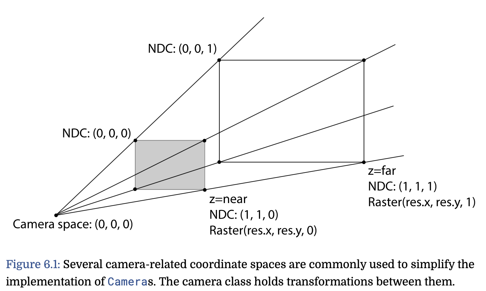

Systems for Coordinating Coordinate Systems
Making 3D graphics code safer by telling vectors where home is
Tuesday, December 15, 2020 · 3 min read
When I took Pat and Matt’s wonderful graphics class CS348B (yay PBRT!), one of the most frustrating debugging journeys I had was related to interpreting vectors in the wrong coordinate systems. At the time I’d come up with an idea to catch such bugs statically, and now, 1.5 years later, I finally have found time to write down the idea.
Here is the problem: A vector only has “meaning” with respect to a coordinate
system. In graphics, a vector could be in all sorts of coordinate systems:
world space, or object space, or camera space, or screen space, or
normalized device coordinate (NDC) space, or raster space (some of these
are self-explanatory, but see PBR
§6.1.1-6.2
for definitions). This leads to bugs. If you interpret a “camera-space” vector
as if it were in “world space,” your math will be all wrong! You need to
apply the affine transformation cameraToWorld before doing any world-space
computation on a camera-space vector. But what if you forget to do that? Your
C++ code will happily compile, but your poor bunny might look like chicken soup
instead… (I learned this the hard way!).

This got me thinking: perhaps a safer Vector3f should know at the type
level what coordinate system it is in. Rather than a Vector3f, perhaps what
we really want is a Vector3f<WorldSpace>. You simply can’t add a
Vector3f<CameraSpace> to a Vector3f<WorldSpace> — that’s a type error!
The compiler makes you call cameraToWorld if you want to do anything with
these two vectors. (All this is very much in the spirit of
torchsaber, by the way.)
I think there are broadly two ways you might want to implement something like
this. One way is to treat CameraSpace as a purely formal symbol, just a
name or an annotation. The compiler’s job is to check these annotations.
You’d have to explicitly break this abstraction inside the implementation of
cameraToWorld, but from a pedagogical perspective I think that is exactly
what you want.
The other way is for the tag CameraSpace to somehow encode the actual
geometry of what camera space “means.” For example, each vector could also
carry around the Transformation that gets you to its host coordinate system
from WorldSpace. Given this information, the compiler could even be able to
infer the implementation of cameraToWorld for free! Of course, this comes
at a cost, which is that the compiler might not be able to statically check
equality of Transformations, because the matrices might not be materialized
at compile-time.
In the rest of this post I’ll quickly literate-ly program option (1) as a proof of concept. It is short and sweet (at least, as “sweet” as any bit of C++ hacking can be).
First, we define our coordinate system “annotations” as dummy classes.
class Space {};
class WorldSpace : public Space {};
class CameraSpace : public Space {};
Next, we design a Vec3 template class that takes in such a “tag” as a
template parameter (CoordinateSystem), and enforces that the tags are the
same on operations. I’ve implemented the “+“ operator but you can imagine the
rest — there is nothing sneaky going on here! In fact, this is exactly how
one implements a generic Vector3 that can be specialized over numeric types
(e.g. Vector3<float>, Vector3<int>, and so on).
template <class CoordinateSystem>
class Vec3 {
static_assert(
std::is_base_of<Space, CoordinateSystem>::value,
"Vec3 annotation must derive from Space"
);
public:
double x, y, z;
Vec3(double x, double y, double z)
: x(x), y(y), z(z) {};
// the '+' operator!
Vec3<CoordinateSystem> operator+(
Vec3<CoordinateSystem>& other
) {
return Vec3(
this->x + other.x,
this->y + other.y,
this->z + other.z
);
}
};
(Note that you need to #include <type_traits> to get std::is_base_of, which
is there just to protect you from trying to make a Vec3<string> or something
else uncouth like that. Completely optional.)
…actually, that’s it! We can already get some mileage out of this. For example, this should be okay:
Vec3<WorldSpace> p(0, 0, 0);
Vec3<WorldSpace> q(1, 1, 1);
auto r = p + q; // ok!
On the other hand, this is perhaps not okay:
Vec3<CameraSpace> s(2, 2, 2);
auto t = r + s; // NOT OK!
And indeed, the compiler complains and gives a helpful error message!
test.cc:40:14: error: no match for 'operator+'
(operand types are 'Vec3<WorldSpace>'
and 'Vec3<CameraSpace>')
40 | auto t = r + s; // NOT OK!
| ~ ^ ~
| | |
| | Vec3<CameraSpace>
| Vec3<WorldSpace>
Of course! How dare we add a camera-space vector to a world-space vector? We
need to transform s to world-space…
Vec3<WorldSpace> cameraToWorld(
Vec3<CameraSpace>& vec
) {
return Vec3<WorldSpace>(
vec.x * 2, vec.y - 4, vec.z + 8 // or whatever
);
}
…and now g++ is happy. :)
auto u = r + cameraToWorld(s); // ok!
Perhaps this trick will make its way into PBRT someday!
Update (Dec 23): Rachit Nigam pointed me to this (very recent) SPLASH paper that considers the same problem. (“See? It’s not just me!”)